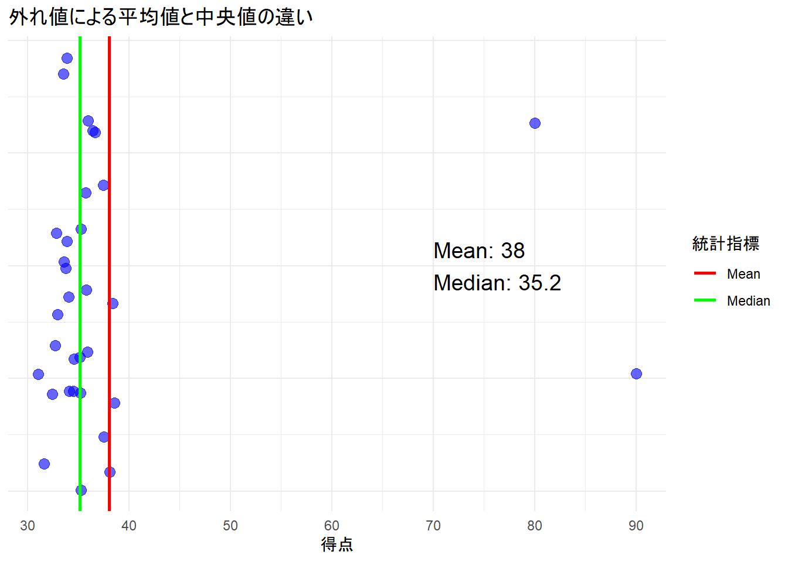
Week 2：要約統計量
事前の確認
この講義のRプロジェクトを開いていますか？
英数字で名前を付けた本日の講義のファイルを作成しましたか？
- .Rでも.Rmdでもどちらでも大丈夫です。
今日の目標
- 記述統計、推測統計の違いおよびデータの尺度について理解できる。
- データの要約統計量やグラフの意味が理解でき、またそれらをRで算出・作成ができる。
今日の格言
Note
プログラムは思った通りには動かない。書いた通りに動くのだ（unknown）
- 前半は主に説明、後半はRを使用して手を動かしながらやってもらいます。
記述統計学と推測統計学
記述統計学（descriptive statistics）
得たデータを要約する統計手法
統計量（statistic）の算出、データの可視化
- 統計量：データから計算された数値のこと（e.g., 平均値や合計値）
推測統計学（inferential statistics）
得られたデータから、母集団の性質を推測する。 測定、将来の予測、因果関係の推測、現象の説明という主に4つの目的
- 母集団：想定する集団のこと（日本人の英語力を調べたい = 日本人全員）
母集団の一部から集めたデータから、母集団全体に当てはまることを理解する
- 記述統計ではできない
データの尺度
4種類あり、比例、間隔、順序、名義の順に情報量が少なくなる
- 上の順序のデータを下の順位のデータに変換することはできるが、逆の変換はできない
比率尺度（ratio scale）
様々な統計処理に使える
例：長さ、重さ、時間
ゼロが「何もない」ことを表す
メモリがすべて等間隔
データ同士で四則演算ができる
間隔尺度（interval scale）
例：温度、テストの得点、偏差値、テストの平均点
メモリの間隔は同じ
ゼロは「何もない」ことを表さない
「足す」「引く」は可能。「かける」「わる」はできない。
順序尺度（ordinal scale）
例：順位、投票のランキング、リカート・スケール（Likert scale）
順位のデータ
メモリの間隔が一定になる保証はない（= 大小のみを指す）。
0位もない
四則演算ができない
名義尺度（nominal scale）
データに任意の数を与えたデータ
- 例：男性は1、女性は2
メモリは等間隔でない
ゼロは「何もない」を表さない
四則演算ができない
「～とみなす」
テスト得点は厳密にいうと、間隔尺度とは言えない？
- 配点が1点と5点は5倍の違いがあるか？
- 0点は能力が全くないと言えるか？
しかしテスト得点を統計分析したい場面が多く、統計分析は間隔尺度以上のデータを必要とする。
テスト得点の間隔を等間隔にする努力を怠らないのであれば間隔尺度として「みなそう」ということに現状はなっている（完全に合意されているわけではない）。
- 本講義ではテスト得点を間隔尺度として「みなす」
要約統計量
データを取ったらとりあえず要約をする。
そのままのデータ（e.g., 100人分の素点）を人間はなかなか理解できない。
集まったデータを目的合わせて要約をし、分かりやすく提示する。
大別して代表値と散布度があり、前者は大体の値、後者はばらつきを表すデータ
各統計量
代表値
平均値（mean）
平均値は沢山ある：算術平均、幾何平均、移動平均
本講義では平均は算術平均を指す
算出方法：すべての数を足し合わせて、データの数で割る
中央値（median）
小さい方から並べてちょうど真ん中にある値
- 奇数の時：1, 2, 3 => 中央値は2
- 偶数の時：1, 2, 3, 4 => 中央値は = 2.5
平均値は外れ値の影響を受けやすいが、逆に外れ値を考慮しやすい。この二つは異なる基準であるため、平均値と中央値の二つを算出して比較するとよい。
四分位（quantile）
小さい方から並べたデータを4分割する
- 第1四分位：データの25%
- 第2四分位：データの50%の個所 = 中央値
- 第3四分位：データの75%
最頻値（mode）
得られた数値をまとめ、同じ数字が何回出てくるか（度数: Frequency）を数える。その中で一番数が多い数字のこと。
名義尺度や順序尺度水準のデータはこの指標を使うとよい
例：以下は3人のアンケート結果です。それぞれ3つのポケモンを選んでいます。
| 回答者 | 1位 | 2位 | 3位 |
|---|---|---|---|
| Aさん | ピカチュウ | イーブイ | ゲンガー |
| Bさん | ピカチュウ | リザードン | ミュウ |
| Cさん | ピカチュウ | カビゴン | フシギバナ |
| ポケモン名 | 得票数 |
|---|---|
| ピカチュウ | 3 |
| イーブイ | 1 |
| ゲンガー | 1 |
| リザードン | 1 |
| ミュウ | 1 |
| カビゴン | 1 |
| フシギバナ | 1 |
- 最頻値は3でピカチュウの得票数が多かった。
散布度
分散（variance）：σ2
- データが平均値の付近に密集している程度
- 値が大きいほどばらつきが大きい
\[\sigma^2=\frac{1}{N}\sum_{i=1}^N(x_i-\mu)^2\]
- N : データの数
- xi : データ一つ一つ
- u : 平均値
- 各データを平均値から引き、「平均値との差」という指標に変換（ = 平均からの偏差）
- 全部足したいが、プラスとマイナスが混じっており、全部足すと0になる。
- 2乗し、全部プラスにする。
- 全部の偏差を足して、データの数で割る。
標準偏差（standard deviation）：σ
- 分散のルートを取った値。分散は元のデータを2乗している。そのため単位が大きく解釈が困難なため。
- 値が大きいほどばらつきが大きい
\[\sqrt{σ^{2}}\]
Note
平均、標準偏差などの要約だけではデータの全体像は見えにくい。下記の図のように、同じ平均、標準偏差（M = 50, SD = 10）でもデータの分布が異なることが分かる。このように、得られたデータの把握には、数値の要約だけでなく、可視化も重要となる。
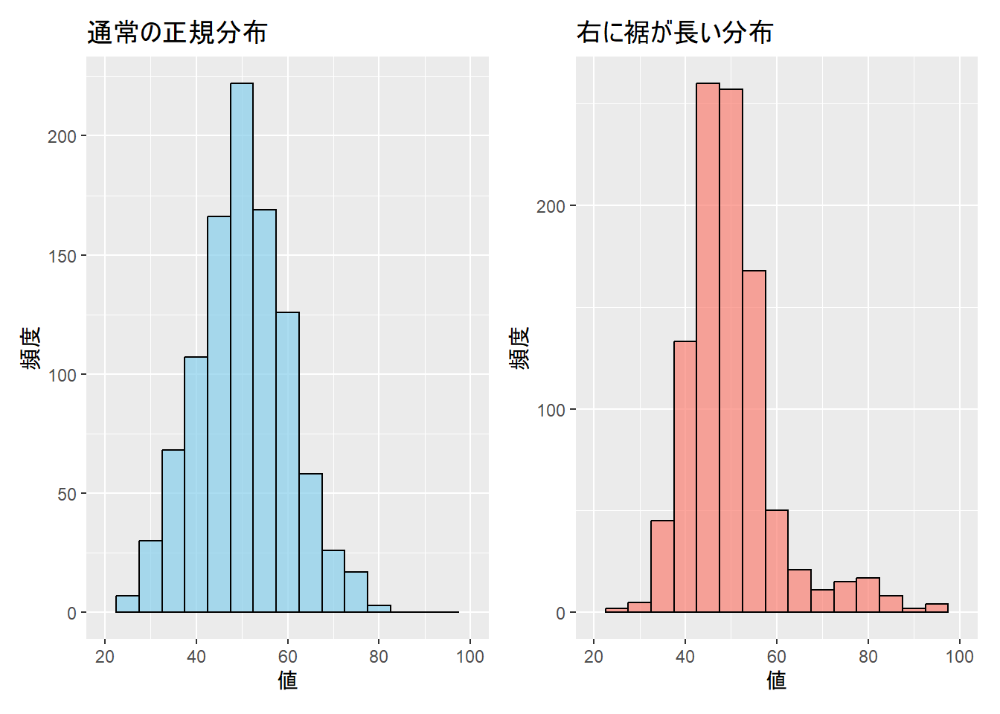
データの可視化
量的データの可視化
1つのデータ
ヒストグラム（histogram）
- データを階級幅で区切り、その中に入るデータがいくつあるか（度数）を描画する
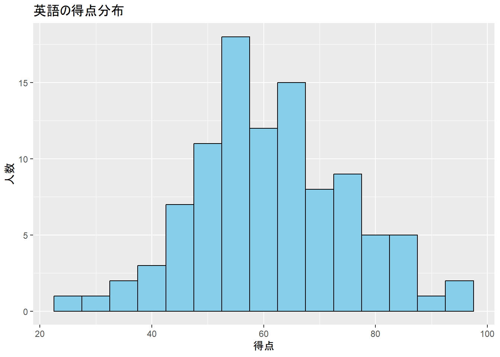
2つのデータ
散布図（scatter plot）
量的データ同士の関係を描画する
- 以下の図では100人がそれぞれ国語と英語のテストを受け、その得点を描画している。
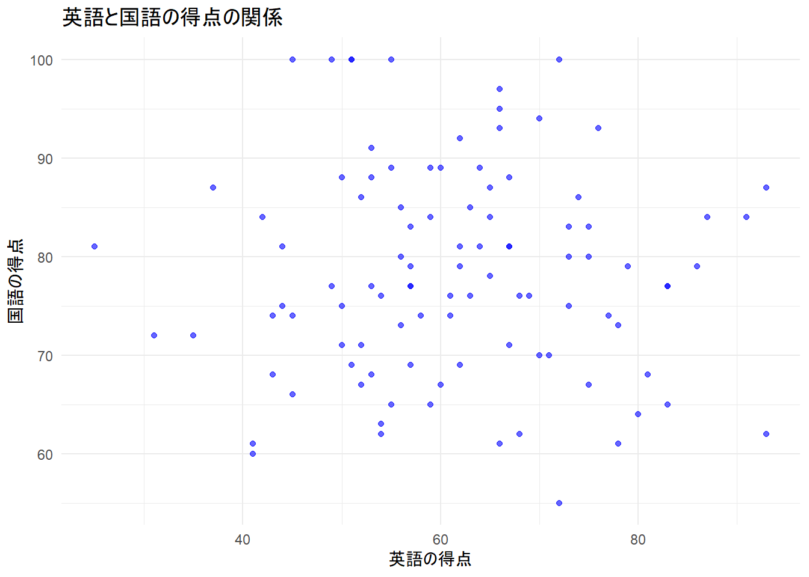
量的 + 質的データの可視化
- 科目（名義尺度）ごとの得点（間隔尺度）のような場合。
棒グラフ（bar plot）
- それぞれの科目の得点の平均値を描画
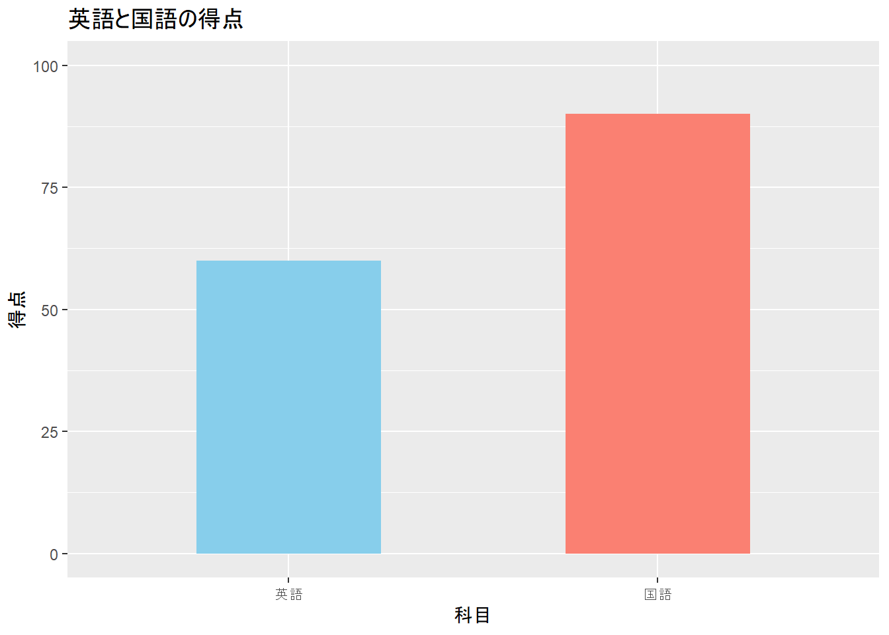
箱ひげ図（boxplot）
棒グラフよりもより多くの情報を確認できる。
外れ値が含まれる場合、描画されている最大値もしくは最小値はデータの中のもっとも大きい数をではない場合がある。
一般的に外れ値として判定される数
- 第1四分位数 - 1.5 × IQR（Inter-Quartile Range：第3四分位数から第1四分位数の範囲）
- 第3四分位数 + 1.5 × IQR
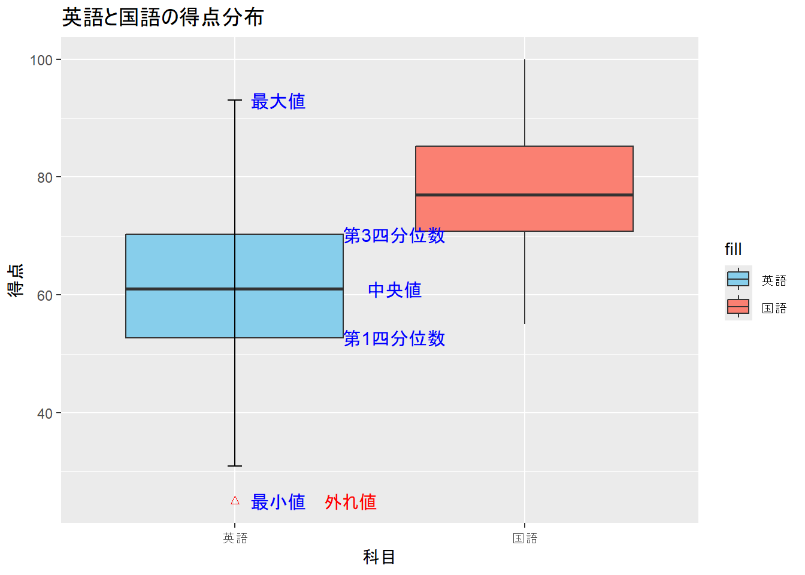
ヴァイオリン・プロット（Violin plot）
ヒストグラムを滑らかな曲線（カーネル密度推定）に変え、背中合わせに張り付けたグラフ
- データが集まっている個所が膨らんで描画されるため、全体的な分布を把握しやすい
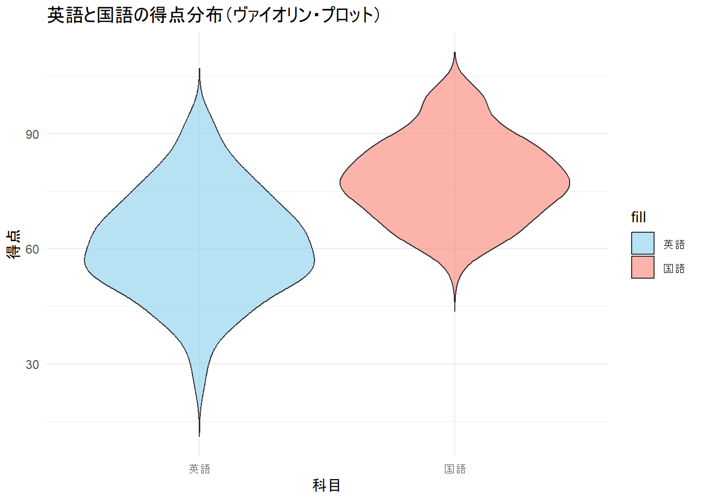
質的データの可視化
- 四則演算ができないため、平均値などを算出できない。
度数分布表（frequency distribution table）
- 1次元
| Yes | No |
|---|---|
| 67 | 33 |
クロス集計表（cross table）
- 2次元
| Pokemon | Yes | No |
|---|---|---|
| イーブイ | 35 | 15 |
| ピカチュウ | 32 | 18 |
ハンズオンセッション
Rの基本用語
変数
どんなデータも格納できる箱。箱には必ず名前を付ける。名前は英数字のみを入れること。また、命名には規則がある。
- 名前の先頭に数字（e.g., 1hako）や記号（e.g., %hako）は使用できない
- 大文字と小文字は区別される（Hakoとhakoは別の変数として認識される）
プログラミングの世界では、以下の二つの命名の流儀がある。
- スネークケース🐍：変数の区切りを”_“で示す（e.g., snake_case）
- キャメルケース🐫：変数の区切りを大文字で示す（e.g., camelCase）
自由に箱（変数）に名前を付けてよいが、できるだけ自分の中で一貫したルールを持ち、第三者が見ても何が格納されているか分かりやすい名前を付けることを意識する。
変数に入れたデータは、［Environment］タブに表示される。
変数の中身が数値の場合、数値を足したりかけたりなど計算ができる。
- numという名前の変数に1から10の数字を入れ、それらを2倍した
num <- 1:10
num [1] 1 2 3 4 5 6 7 8 9 10num * 2 [1] 2 4 6 8 10 12 14 16 18 20- 変数の中身は上書きすることもできる
num <- num * 2データの型
「いちたすに」と「1 + 2」はコンピュータにとっては別もの
- 実数型（numeric）：数値全般（e.g., 10.4）
- 整数型（integer）：整数のみ（e.g., 10）
- 文字列型（character）：文字（e.g., “十”）。入力する際は
""や''で囲む - 論理型（logical）：TRUEとFALSEからなる
- 因子型（factor）：データに順番（数字を割り振る）
dat <- 1:4
str(dat) int [1:4] 1 2 3 4dat <- factor(dat, levels = c(4:1))
str(dat) Factor w/ 4 levels "4","3","2","1": 4 3 2 1関数
パッケージに含まれている、命令を実行するのに必要なもの。
data.frame()のような文字列とかっこの組み合わせ。かっこの中にデータを格納する。数学の関数とイメージしてもよい。例えば、Y = 2x という関数は、xを2倍する関数。入れたデータが2倍されて返ってくる。
使う際は呼び出す必要があり、Rのセッションが切れるまでは何回も呼び出す必要はない。Rに標準で備わっているものは呼び出す必要はない（base関数という）。
- 下の例では、
plot()関数で変数の中身を描画している
- 下の例では、
dat.2 <- 1:10
plot(dat.2)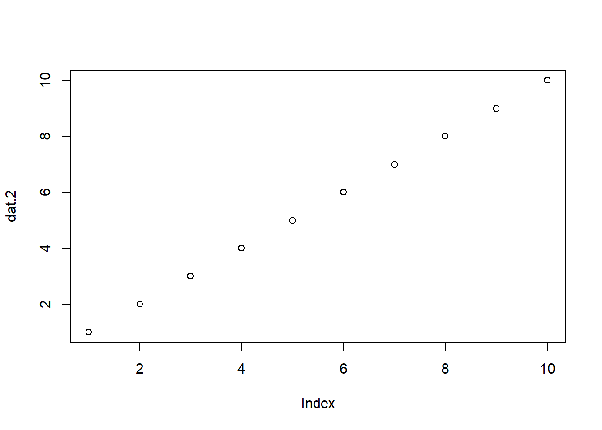
help(関数名)やウェブサイトで調べると、使い方を確認することができる。
ベクトル
データのまとまり
c()関数で作成可能。連続する数値であれば、:でもOK
numVector1 <- c(1, 35, 90, 0.9)
numVector2 <- c(1, 35, 90, 9)
chVector <- c("いちご", "strawberry", "イチゴ")
numchVector <- c("イチゴ", 1000, "みかん", "500")- 変数に何かを入れたら、必ず中身を確認する！
numVector1[1] 1.0 35.0 90.0 0.9numVector2[1] 1 35 90 9chVector[1] "いちご" "strawberry" "イチゴ" numchVector[1] "イチゴ" "1000" "みかん" "500" - データの型がどうなっているかを確認。確認する関数は様々なものがある。[Environment]タブでも表示されている。
class(numVector1)[1] "numeric"str(numVector2) num [1:4] 1 35 90 9typeof(chVector)[1] "character"mode(numchVector)[1] "character"データを読み込む
研究では、ファイルに格納されたデータに対して分析を行う。データ基本的にxlsx、csv、txtという拡張子のファイルに格納されていることが多い（最近ではオンラインでのデータ収集によってJSON形式もよく見るようになりました）。
xlsx
- エクセルファイル。
csv (Comma-Separated Values)
- カンマ（,）で項目を区切ったファイル
txt
- 文字データだけが含まれるファイル（区切りは様々）
拡張子を表示させる設定に変更する。
データを読み込む場合、ファイルの種類によって読み込む際の関数が異なる。配布されたデータを、本講義用のR projectに移動させる（ = 本講義用の📁）。
移動させたら、以下のコードを走らせ、データをR(Studio)に読み込む
- 文字化けしている場合教えてください。
以下の処理で、csvファイル内のデータを
datという変数の中に格納したことになる。
dat <- read.csv()データフレーム
行（横）と列（縦）からなる、ベクトルのかたまり
- 数値、文字、因子など様々なベクトルを格納するデータ。データ分析のデータは基本的にこの型を指す。
読み込んだデータは基本的にデータフレームであるが、ベクトルから
data.frame()関数で作成することもできる。
fruit_df <- data.frame(
name = c("イチゴ", "みかん"),
price = c(100, 150)
)- 数値は行の番号を指し、データには含まれない。
fruit_df name price
1 イチゴ 100
2 みかん 150要約統計量の算出
各統計量ごと
# 合計 (sum)
sum(mtcars$mpg)[1] 642.9# 平均 (mean)
mean(mtcars$mpg)[1] 20.09062# 中央値 (median)
median(mtcars$mpg)[1] 19.2# 最大値 (max)
max(mtcars$mpg)[1] 33.9# 最小値 (min)
min(mtcars$mpg)[1] 10.4# 標本分散 (var)
var(mtcars$mpg)[1] 36.3241# 標本標準偏差 (sd)
sd(mtcars$mpg)[1] 6.026948# （最大 - 最小）
range_mpg <- range(mtcars$mpg)
wide_mpg <- diff(range_mpg)
wide_mpg # 範囲を表示[1] 23.5# 尖度 (kurtosis) ※"moments" パッケージを使用
#install.packages("moments") # 初回のみ
library(moments)
kurtosis(mtcars$mpg)[1] 2.799467# 四分位範囲 (IQR)
IQR(mtcars$mpg)[1] 7.375一度に出力
base関数
base::summary(mtcars$mpg) Min. 1st Qu. Median Mean 3rd Qu. Max.
10.40 15.43 19.20 20.09 22.80 33.90 psychパッケージのdescribe関数
# install.packages("psych") 1つのパソコンにつき一回でよい
library(psych) # 使用する際、セッションにつき一回
Attaching package: 'psych'The following objects are masked from 'package:ggplot2':
%+%, alphadescribe(mtcars$mpg) vars n mean sd median trimmed mad min max range skew kurtosis se
X1 1 32 20.09 6.03 19.2 19.7 5.41 10.4 33.9 23.5 0.61 -0.37 1.07最頻値
- Rでは最頻値の求め方に少し一工夫必要。いろいろなやり方があるが、その一例として下記がある。
# 最頻値 (mode) ※最頻値は複数ある場合があるため table() を使用
table_mpg <- table(mtcars$mpg)
mode_mpg <- as.numeric(names(table_mpg)[table_mpg == max(table_mpg)])
mode_mpg # 最も頻度の高い値を表示[1] 10.4 15.2 19.2 21.0 21.4 22.8 30.4作図
Rに最初から登録されているデータセットを使用
描画のパラメータ。詳しくはウェブサイトを参考に（例 ）
- main: 図のタイトル
- xlab: x軸のタイトル
- ylab: y軸のタイトル
- border: ヒストグラムの棒の枠線
- type: 線や点のスタイル
- col: 色を指定（e.g., “blue”, “red”, “green”）
- pch: 点の形指定（e.g., pch = 16 は●、pch = 17 は▲）
- lwd: 線の太さを指定
ヒストグラム
hist(mtcars$mpg,
main = "Histogram of Miles Per Gallon (mpg)",
xlab = "Miles Per Gallon",
col = "lightblue",
border = "black")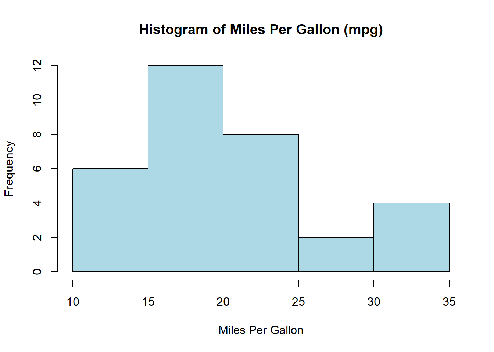
折れ線グラフ
plot(airquality$Temp,
type = "l",
main = "Daily Temperature in New York",
xlab = "Day",
ylab = "Temperature (°F)",
col = "blue",
lwd = 2)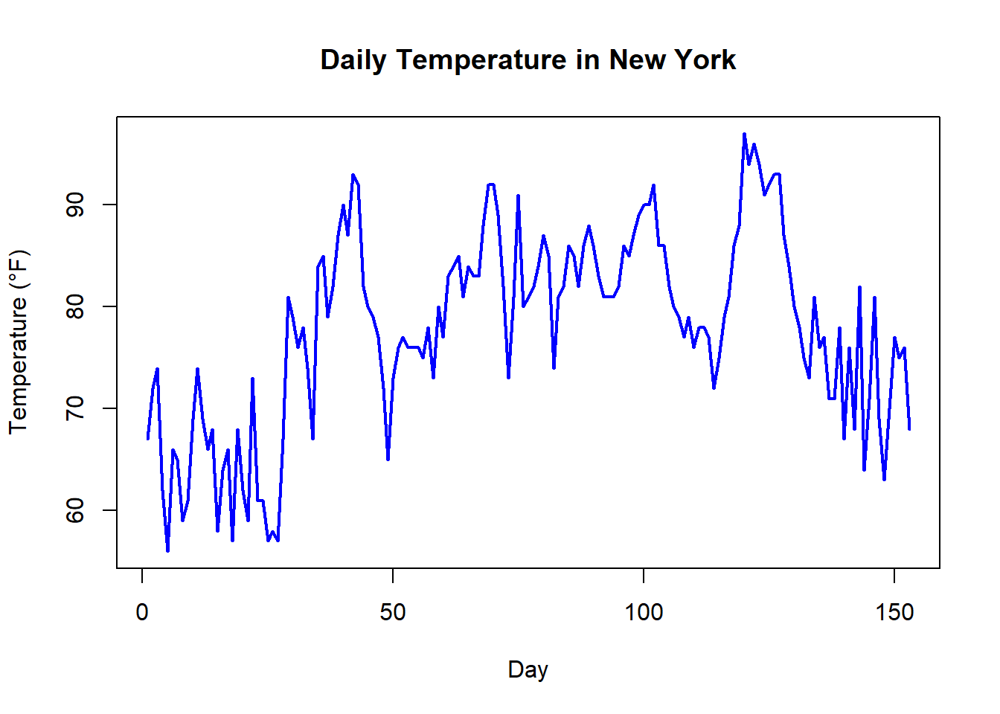
散布図
plot(mtcars$wt, mtcars$mpg,
main = "Scatter Plot of Car Weight vs. MPG",
xlab = "Weight (1000 lbs)",
ylab = "Miles Per Gallon",
col = "darkgreen",
pch = 16)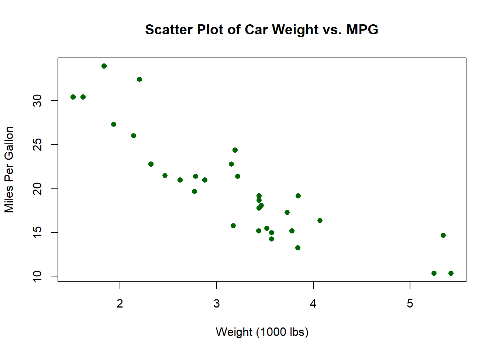
箱ひげ図
boxplot(mtcars$mpg[mtcars$vs == 1], mtcars$mpg[mtcars$vs == 0],
names = c("Engine: straight", "Engine: V-shaped"),
main = "Boxplots of Miles Per Gallon",
ylab = "Values",
col = c("lightcoral", "lightblue"))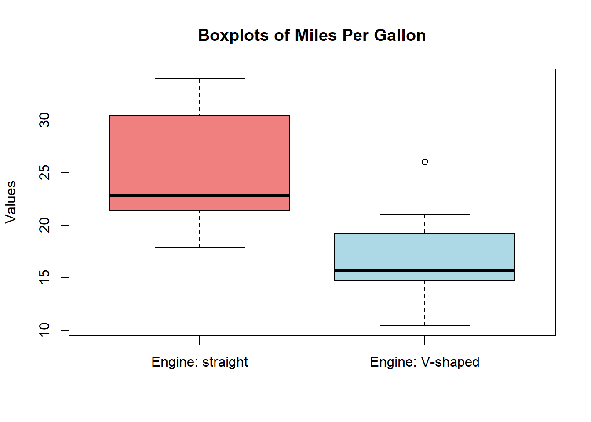
バイオリンプロット
#install.packages("vioplot")
library(vioplot)Warning: package 'vioplot' was built under R version 4.3.3Loading required package: smWarning: package 'sm' was built under R version 4.3.3Package 'sm', version 2.2-6.0: type help(sm) for summary informationLoading required package: zoo
Attaching package: 'zoo'The following objects are masked from 'package:base':
as.Date, as.Date.numericvioplot(mtcars$mpg[mtcars$vs == 1], mtcars$mpg[mtcars$vs == 0],
drawRect = F, # Tにすると、箱ひげ図が中に描かれる
names = c("Engine: V-shaped", "Engine: straight"),
col = c("lightcoral", "lightblue"),
main = "Violin Plot of Miles Per Gallon",
ylab = "Miles Per Gallon")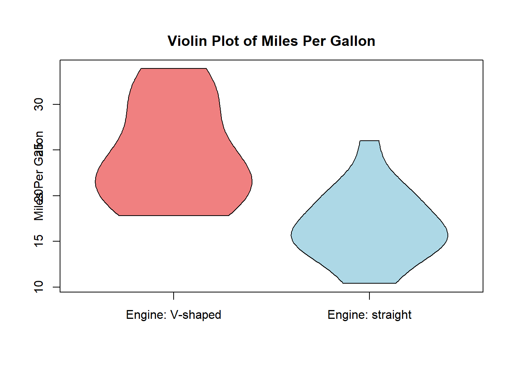
まとめ
（引用：平井 et al. (2021). 『教育・心理系研究のためのRによるデータ分析』 p. 3）
| 種類 | 指標 | 特徴 |
|---|---|---|
| 名義尺度以上 | 最頻値 (mode) | 最も多い度数を示すデータの値。主に名義尺度で用いられる代表値。 |
| 順序尺度以上 | 中央値 (median) | データを順番に並べたときの真ん中（50%タイル）の値。順序情報に基づくため外れ値の影響を受けにくい。 （例）テストの得点が {1, 3, 5, 7, 9} の場合は、中央値は 5 になる。 |
| 間隔尺度以上 | 平均 (mean) | 個々の測定値の和を測定値の個数で割った値。中央値に比べ、外れ値に引っ張られる傾向がある。なお、標本平均 \(\bar{x}\) と区別して母集団の平均を表す場合は平均（\(\mu\)）と呼ぶ。 |
| 名義尺度以上 | 平均情報量 | 総度数と各カテゴリ度数との比率。 （例）本の貸し出し総数が 10 件とすると、総度数は 10 件。そのうち、フィクションは 3 件、実務書 3 件、ノンフィクション 2 件、それ以外のジャンルは 2 件とカテゴリ度数を示す。 |
| 順序尺度以上 | 範囲 (range) | 最大値と最小値との差。 |
| 順序尺度以上 | 四分位偏差 (quartile deviation) | 順に並んだデータを 4 等分し、その境界となる第1四分位数（\(Q_1\)：25%タイル）と第3四分位数（\(Q_3\)：75%タイル）の差を四分位範囲（inter quartile range）と言う。それを 2 で割った値が四分位偏差。 \(Q = \frac{Q_3 - Q_1}{2}\) |
| 間隔尺度以上 | 分散 (variance) | 平均からの偏差平方和の大きさを示す。データ \(x_i\) と平均（\(\bar{x}\)）の差を2乗して、全データ（\(n\)）またはデータ数 \(n-1\)（標本分散）で割った値。統計では、不偏不分散（unbiased variance）として、\(n-1\) で割ることが多い。 \(s^2 = \frac{\sum (x_i - \bar{x})^2}{n-1}\) |
| 間隔尺度以上 | 標準偏差 (standard deviation) | 上記の分散の平方根を取った値で、非負値になる。単位が元の値と同じ尺度なので直感的に解釈しやすい。小さい値はデータが平均の近くにあり、個別データのばらつきが小さいことを示す。 \(s = \sqrt{\frac{\sum (x_i - \bar{x})^2}{n-1}}\) |
次週までの課題
課題内容
小テストに向けて今回の内容を復習する。必ず手でコードを入力してRを実行する。
下記のデータをもとに、どの指標でもよいので、以下の内容を含めること。
要約統計量を算出
最低2つの図
気づいたことを2行以上でまとめる
ポケモンのデータセット（入手元）
- 一部列を削除している。
データの内訳
- id: 各ポケモンに振られた数値
- 名前：ポケモンの名前
- タイプ1：ポケモンに設定されている属性のようなもの。複数のタイプを持つポケモンがいるので、タイプ1となっている
- 高さ：身長
- 重さ：体重
- 世代：ポケモンには1~8まで世代が存在し、新しいゲームが出るたびに新種のポケモンが発表される
- ステータス：ポケモンが持つ6つ能力（HP、こうげき、ぼうぎょ、とくこう、とくぼう、すばやさ）の合算値
- HP: Hit Pointで体力のこと
- こうげき：物理技の攻撃力
- ぼうぎょ：物理技の防御力
- とくこう：特殊技の攻撃力
- とくぼう：特殊技の防御力
- すばやさ：どれくらい速くワザを出せるか
- 捕まえやすさ：数値が上がるほど捕まえやすくなり最大で255で、最小は3
- 進化：0 = 進化しないポケモン、1 = たねポケモン、2 = 1進化したポケモン、3 = 2進化したポケモン
- 画像URL：コピー&ペーストすればどんなポケモンか見れる
提出方法
- R Markdownファイルで作成し、HTMLファイルに変換しTACTへ提出
- 締め切りは今週の木曜日23:59まで
参考文献
- 📚清水（編著）（2021）『心理学統計法 (放送大学教材 1638)』放送大学教育振興会
- 📚竹内・水本（編著）（2023）『外国語教育研究ハンドブック【増補版】―研究手法のより良い理解のために』松柏社
- 📚西田（2022）『Rでらくらくデータ分析入門 ―効率的なデータ加工のための基礎知識』技術評論社
- 📚平井・岡・草薙（編著）（2022） 『教育・心理系研究のためのＲによるデータ分析―論文作成への理論と実践集』東京図書
- 💻A Complete Guide to the Built-in Datasets in R
- 💻グラフのパラメータ
- 💻ポケモンで学ぶデータ分析｜データの中身を知ろう